业务员
- 接收逾期提醒
- 反馈逾期原因和预计回款日
- 查看本人客户逾期明细
- 补充历史跟进记录
Training Course
根据业务员、财务人员、管理层三份操作文档重新整理为网页课件，包含角色分工、流程闭环、具体操作步骤和脱敏截图示意。
Roles
课件按岗位拆分，培训时可以先讲系统闭环，再让每类用户只学习自己每天需要做的动作。
Workflow
逾期管理不是单点录入，而是从数据、提醒、反馈、回款到复盘的连续闭环。
按周期准备逾期基础数据，导入系统并检查结果。
系统向责任业务员推送待跟进客户。
业务员填写逾期原因和预计回款时间。
财务录入回款并匹配对应逾期记录。
管理层查看周报和报表，推动重点客户闭环。
Sales Guide
业务员重点掌握两件事：及时回复客户逾期情况，以及随时查询本人客户明细。
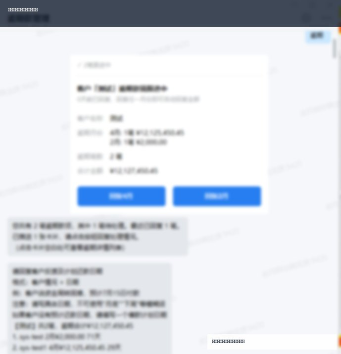
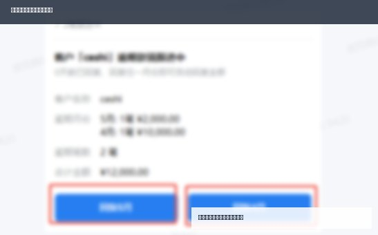
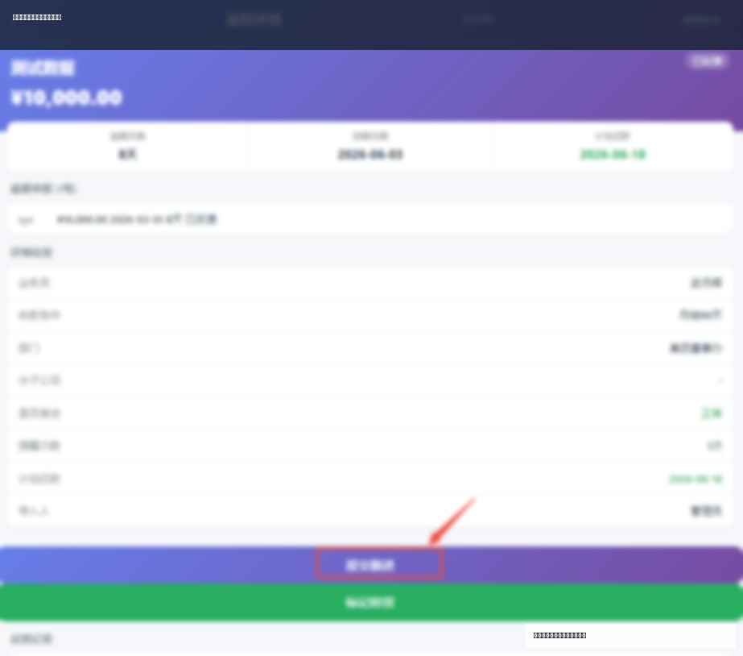
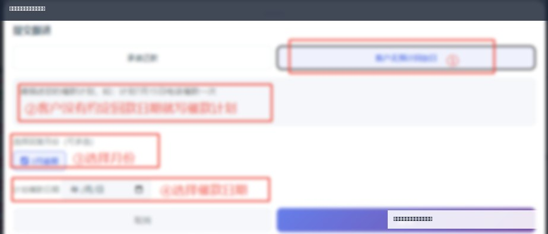
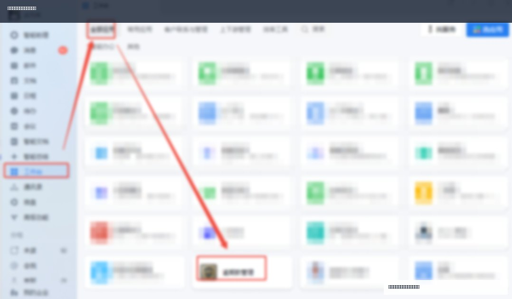
Finance Guide
财务人员是系统数据质量的第一责任人，核心是导入、检查、回款匹配和报表核对。
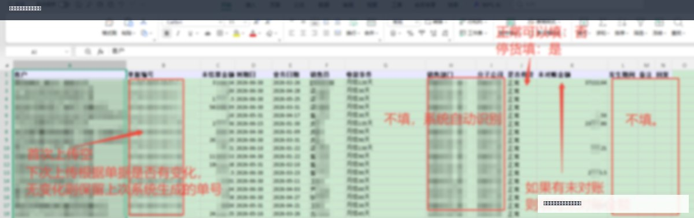
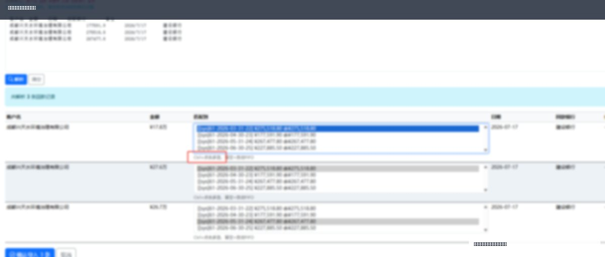
Management Guide
管理层重点看周报、看趋势、看高风险客户，并推动业务与财务形成闭环。
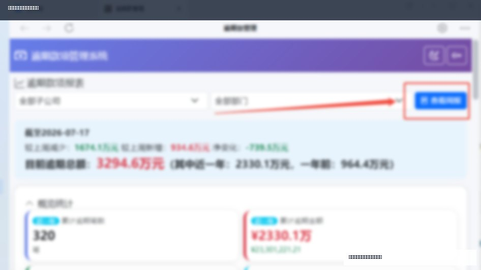
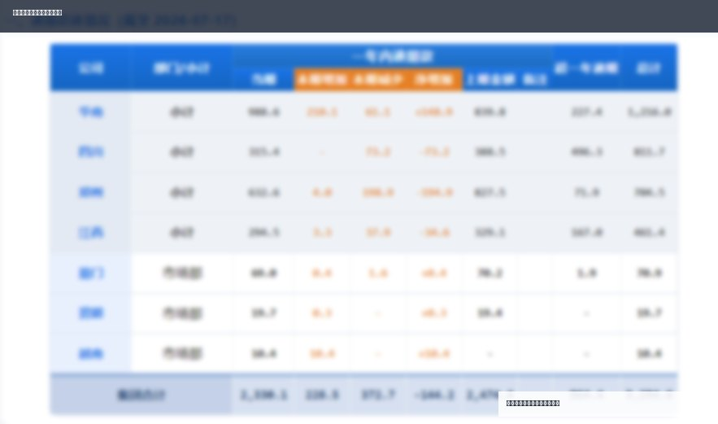
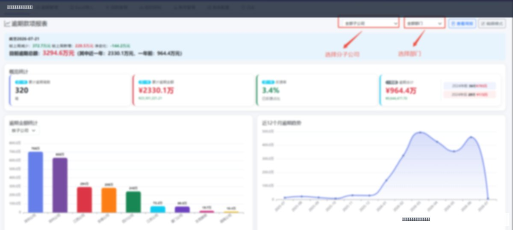
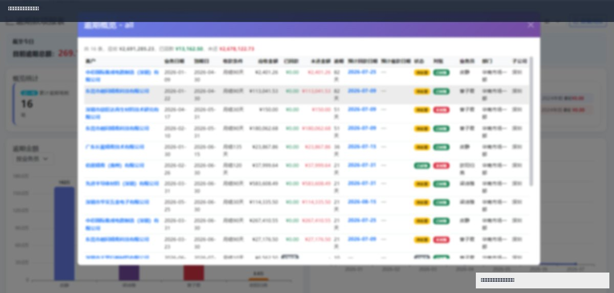
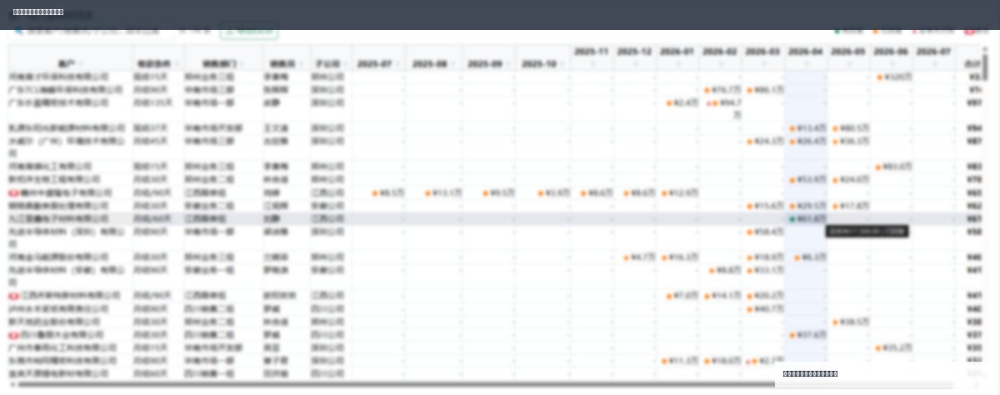
FAQ
培训讲师可以把下面问题作为现场问答，也可以作为学员自查材料。
不建议。有效反馈至少应包含逾期原因、当前进展和预计回款安排，否则管理层无法判断风险和下一步动作。
按系统提供的无预计回款日选项处理，并在原因中说明当前沟通情况，后续取得明确时间后再补充反馈。
优先检查客户名称是否一致，再查看是否存在多条逾期记录需要人工选择，必要时由财务手动关联。
检查最新批次是否导入成功、是否生效、数据范围是否完整，以及异常记录是否已经处理。
Checklist
培训结束后，建议按角色逐项确认是否会操作。
| 角色 | 必须会的动作 | 现场验收方式 |
|---|---|---|
| 业务员 | 查看提醒、填写反馈、查询本人客户逾期、查看历史反馈。 | 现场完成一次模拟客户反馈。 |
| 财务人员 | 准备导入数据、检查导入结果、录入回款、处理匹配异常。 | 现场说明一次导入前后检查点。 |
| 管理层 | 查看周报、理解指标、筛选下钻、定位高风险客户。 | 现场从周报总览追到一个客户明细。 |